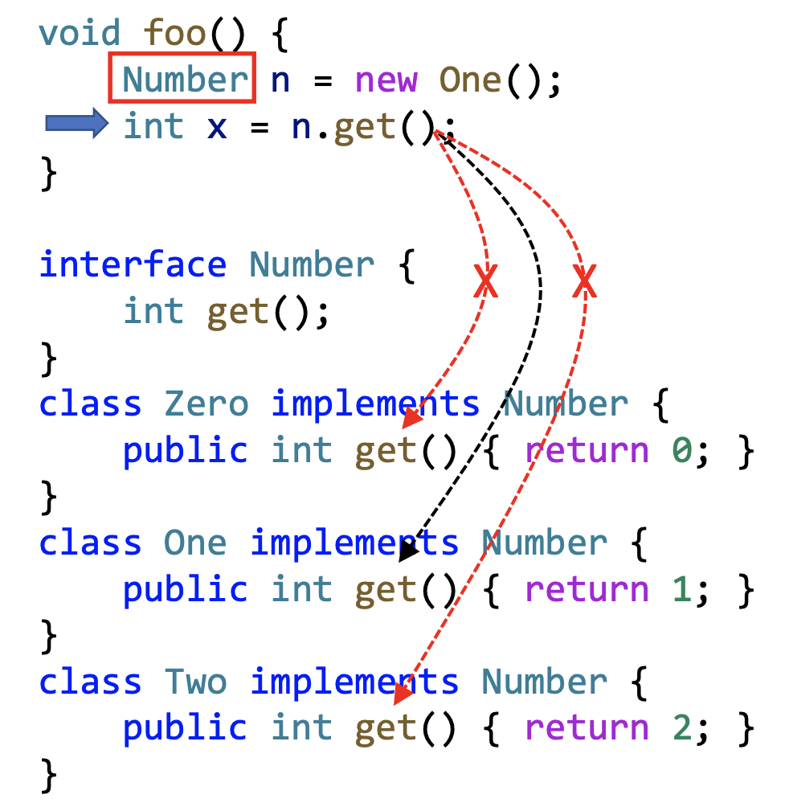
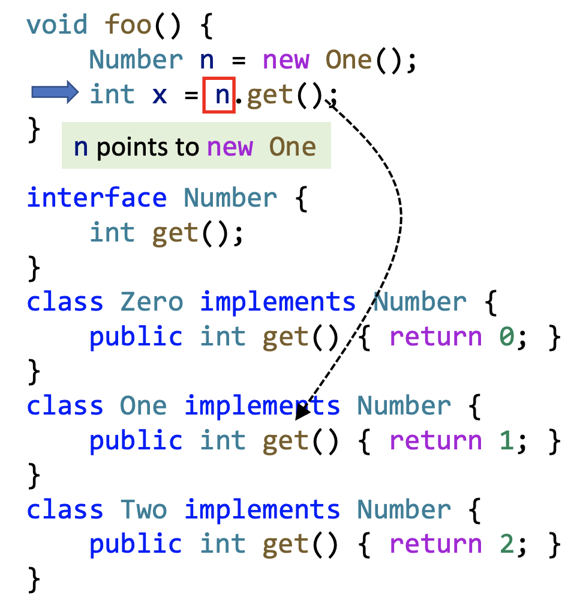
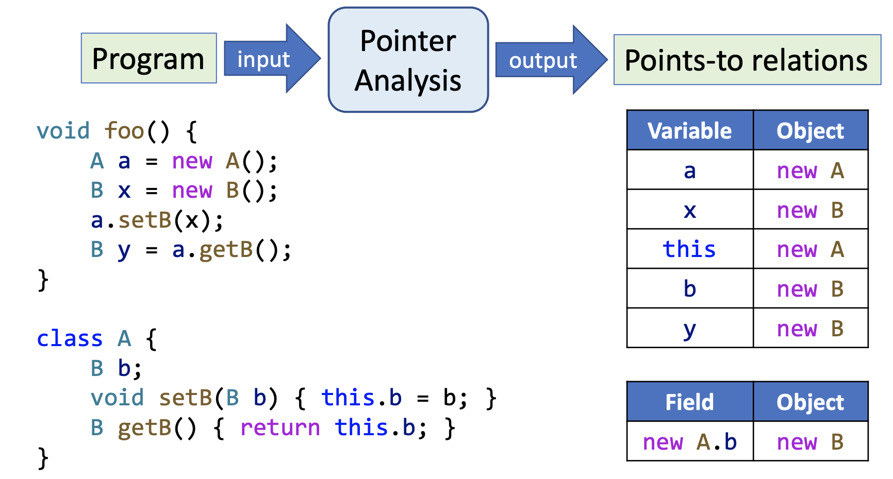
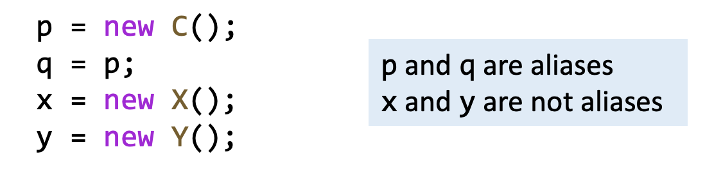
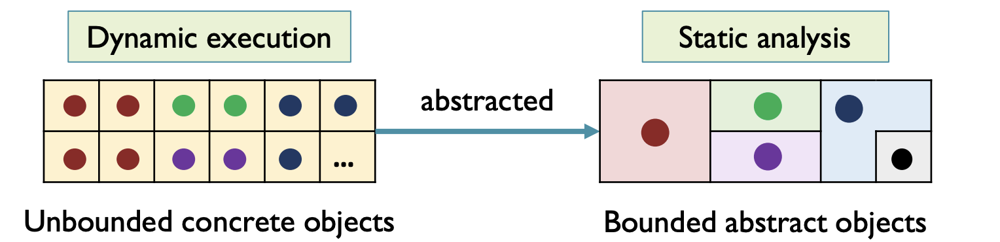
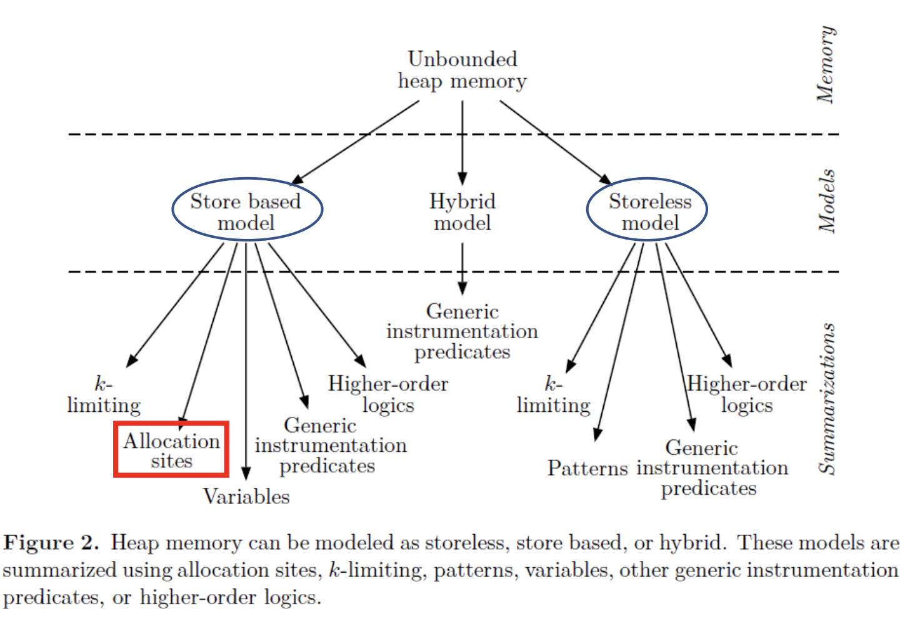
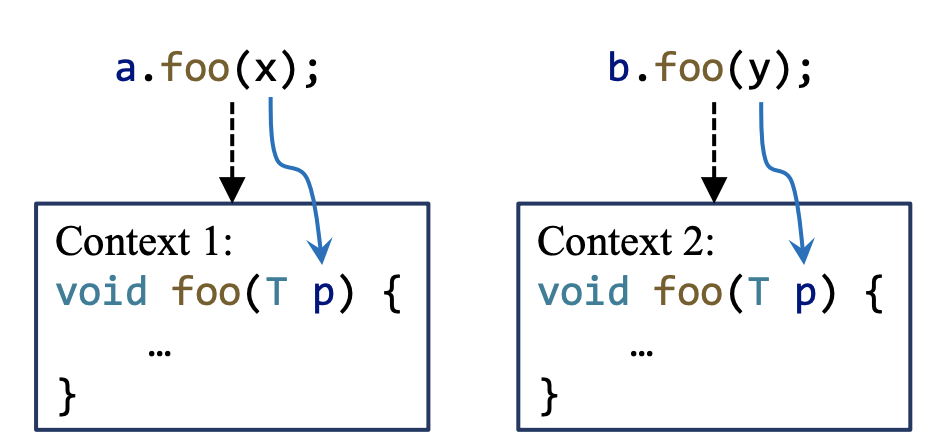
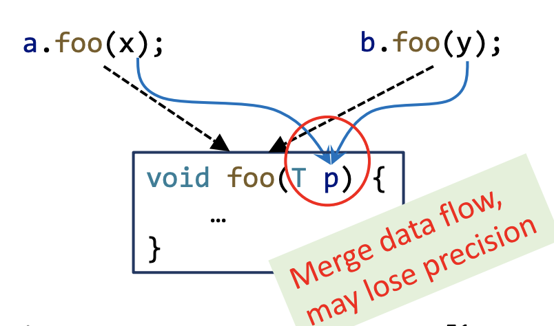
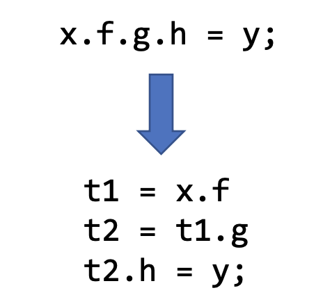

Static Program Analysis (Pointer Analysis)
Motivation
CHA 只关注类的继承结构，对于上述代码 CHA 得到3个 call targets，其中有两个是误报（false positives），从而常量传播分析的结果是 ；
而指针分析（Pointer Analysis）基于指向关系（point-to relation），我们能够知道 n 实际指向的就是 new One() 得到的对象，从而常量传播分析的结果就是 。
对比 CHA 和 Pointer Analysis 可以发现指针分析的结果更加精确！
Introduction to Pointer Analysis
- 指针分析计算一个指针实际指向的内存地址；
- 对于面向对象语言（object-oriented program）如 Java，指针分析计算一个指针（variable or field）实际指向的对象；
- 指针分析可以视为一个 may analysis，因此是 over-approximation。
🌰
指针分析和别名分析（Alias Analysis）相似但有区别：
-
指针分析：分析一个指针实际指向的对象
-
别名分析：分析两个或者多个指针是否指向同一个对象

别名信息能够通过指向关系进行推导得出。
指针分析的应用：
- 得到基础信息，如 call graph，aliases
- 编译器优化
- Bug 检测，如空指针检测
- 安全分析，如信息流分析
Key Factors of Pointer Analysis
影响指针分析的四个要素：
| Factor | Problem | Choice |
|---|---|---|
| Heap abstraction | How to model heap memory? | - Allocation-site - Storeless |
| Context sensitivity | How to model calling contexts? | - Context-sensitive - Context-insensitive |
| Flow sensitivity | How to model control flow? | - Flow-sensitive - Flow-insensitive |
| Analysis scope | Which parts of program should be analysed? | - Whole-program - Demand-driven |
Heap Abstraction
在动态执行中，由于存在递归和循环，堆上的对象数量可能是无限的；为了确保指针分析能够终止，堆抽象技术将动态运行时无限数量的对象抽象为静态分析中有限数量的对象。
堆抽象技术主要有两大流派：Store-based model 和 Storeless model
这里介绍最为常用的堆抽象技术 Allocation-Site Abstraction：
- 根据 objects 的创建点（allocation site）对 objects 进行建模
- 为每个创建点创建一个 abstract object，它将代表动态运行时实际创建的所有对象
Context Sensitivity
在指针分析过程中针对调用上下文（calling contexts）的建模分为两种：
-
Context-sensitive
区分一个方法不同的调用上下文，针对每个上下文分析一次。
 -
Context-insensitive
合并一个方法的所有调用上下文，对每个方法只分析一次，可能会损失精度。

Flow Sensitivity
指针分析中控制流处理分为两种：
-
Flow-sensitive
考虑程序中语句的执行顺序，对每一个程序点维护一个指向关系的 map。
-
Flow-insensitive
忽略程序中语句的执行顺序，对整个程序只维护一个指向关系的 map。
如上图，流敏感（蓝色）对每个程序点都有一个指向关系的 map，而流不敏感（橘色）只保存全局一个指向关系的 map，因此有可能误报。
之前课程的数据流分析都是流敏感的，而在 Java 这类 OOP 语言的指针分析中，Flow-sensitive 未必就比 Flow-insensitive 要更好，因此接下来主要介绍 Flow-sensitive 的指针分析（更常用）。
Analysis Scope
指针分析可以分析全程序的所有指针信息，也可以分析部分代码的指针信息：
-
Whole-program
分析程序中所有指针的指向关系，分析结果可供所有应用使用。
-
Demand-driven
- 根据需求只分析程序中部分指针（special site of interest）的指向关系，分析结果只能满足特定的应用。
- 需要先找到 special site of interest，然后进行分析，因此时间复杂度可能更高。
Concerned Statements
现代语言中有许多种类的语句（statement）：
- if-else
- switch-case
- for/while/do-while
- break/continue
- …
但上述语句都不会影响指针的指向，因此在指针分析中通常会忽略，而只是关注那些影响指针指向的语句（pointer-affecting statements）。
Pointers in Java
- Local variable: x
- Static field (global variable): C.f
- 可视为 Local variable 处理
- Instance field: x.f
- Array element: array[i]
- 静态分析无法计算数组每个下标具体的指向关系（如数组下标为变量时），通常做法是将其建模为 single field，记作 arr，它指向所有存储在数组中的值。
- 可视为 Instance field 处理
Pointer-Affecting Statements
- New:
- Assign:
- Store:
- Load:
- Call:
对于复杂的内存操作语句（Store/Load）通常会引入临时变量将其转换为三地址码进行分析。
对于方法调用（Call）语句，存在三种调用类型：
- Static call: C.foo()
- Special call: super.foo(), x.<init>(), this.privateFoo()
- Virtual call: x.foo()
其中最复杂的是 virtual call，因为存在多态所以可能会有多个被调方法，而 static call 和 special call 只会有一个确定的被调方法。因此接下来主要关注 virtual call。